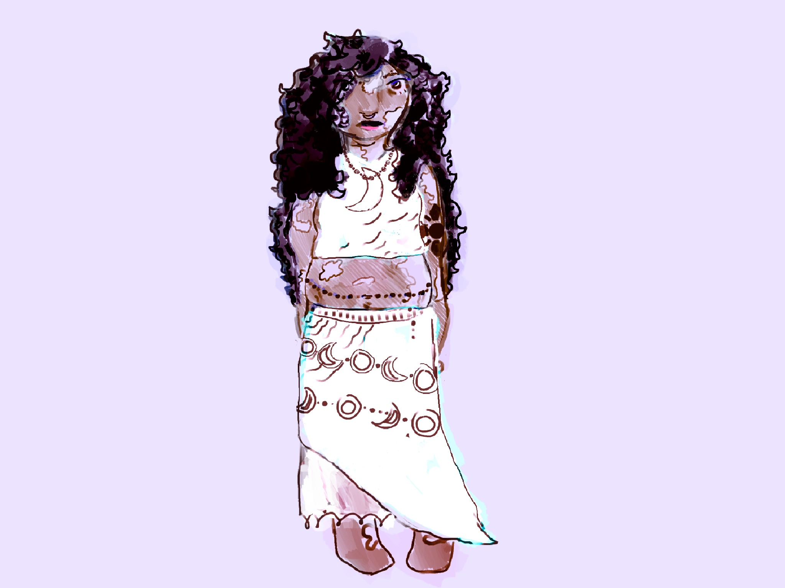
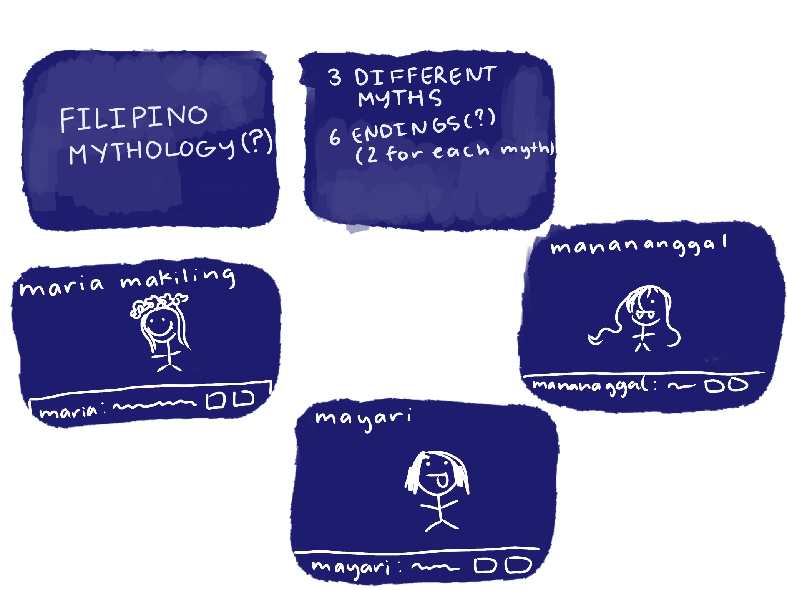
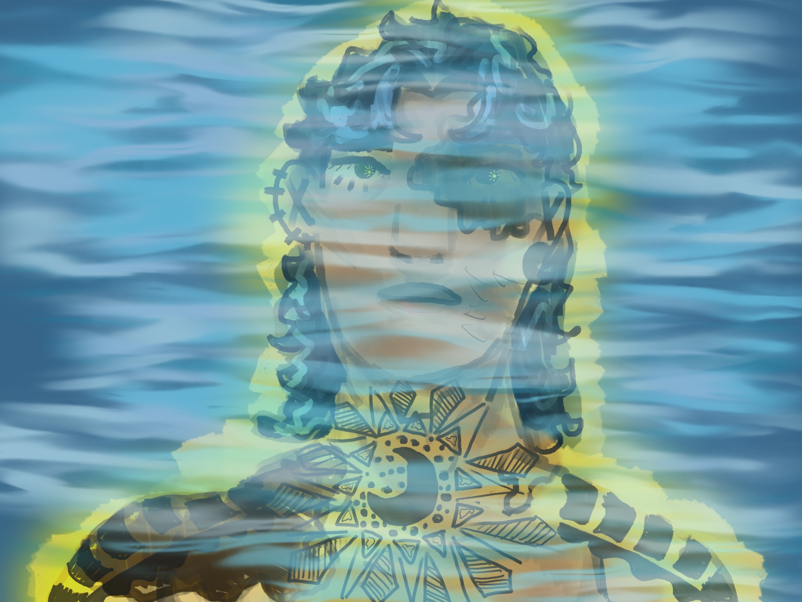

Portfolio

Title: Matulog
Year: 2026
click THIS to playThis work essentially is a display of different folklore in Philippine culture. You start out in a jeepney and fall asleep, you obviously dream and this is one of the outcomes. The ones that I have displayed are Manananggal and Mayari. Manananggal is known for being a vampire that likes to feed off pregnant women and is usually someone who preys at night. She may appear pretty in the daytime but is later seen the complete opposite. In this story she is not that scary. Mayari is known as the moon god in folklore. She is known for having a twin brother who is the sun god. I liked developing a different way of their story and the dynamics. I drew her how I interpreted it.
My parents didn’t really introduce filo folklore to me as a kid but I wanted to scope out for myself to get myself to learn more about it. I researched about both of the gods and got really attached to learning about them. I would love to add on more people into this fun webpage. I also really had fun redesigning the characters. I'm full Filipino and I had lost touch with the culture, which is folklore, I think that the more I learn about the culture the more. I can truly capture the idea and characteristics of what my life could have been like if my parents chose to stay in the Philippines. The questions I was interested in learning about was essentially just what kind of folklore is created. I really enjoyed learning about the creative backgrounds for each of them, as well as learning about how people perceive them differently.
I took a lot of inspiration from the New Media hyperlinks that we went over in class. I specifically really enjoyed going through Olia Lialina’s My boyfriend came back from the war 1996. MBCBFTW was really enjoyable and I really liked being able to click through everything. It was quite the experience. As well as my website is a shifting house, was another inspiration for this because it helped me understand what components of a HTML webpage can do.

